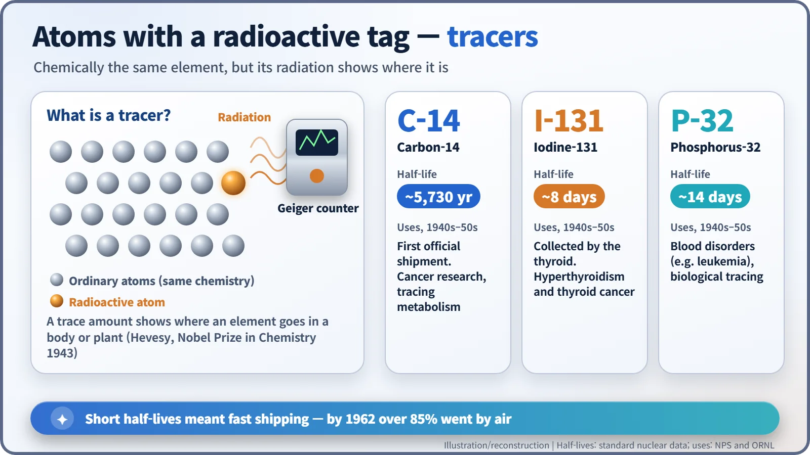
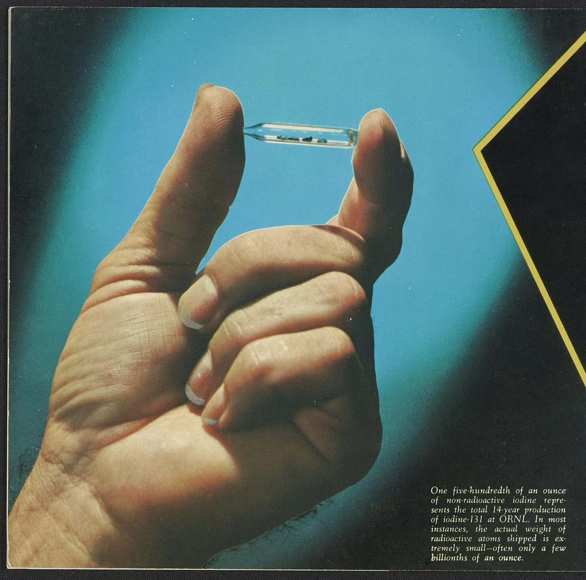
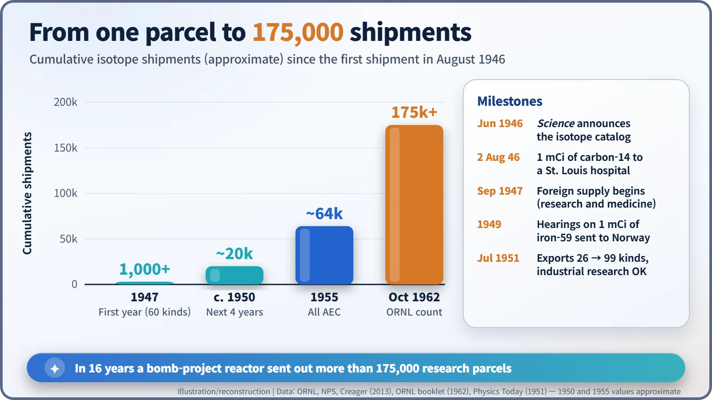
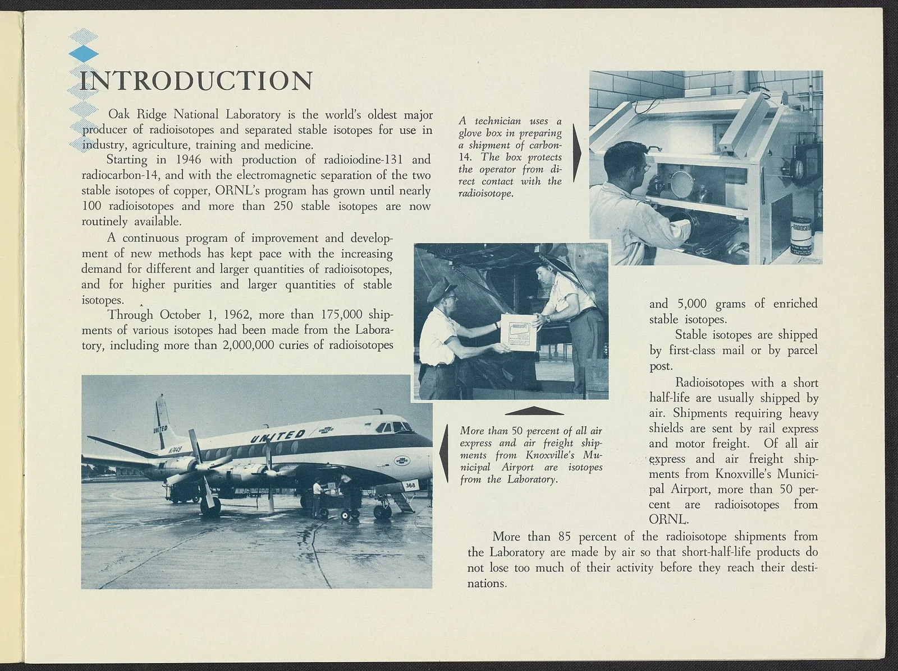

Nuclear History · 132
Order Form In, Parcel Out — The 1946 Radioisotope Distribution Program
A catalog in Science, a millicurie of carbon-14 for a cancer hospital, and a congressional row over one shipment of iron-59.
In June 1946 the Manhattan Project published a catalog of radioactive isotopes that scientists could order, and on 2 August 1946 Oak Ridge sent its first official shipment: 1 millicurie of carbon-14 for cancer research in St. Louis. Within 16 years the program had mailed more than 175,000 shipments, survived a congressional row over exports, and laid the groundwork for nuclear medicine.
Order form in, parcel out
Flip through a catalog, pick what you need, mail an order form, and a few weeks later a parcel turns up at your door. Nothing could be more ordinary today. In the summer of 1946, American scientists began ordering something extraordinary this way: radioactive atoms made in the very reactor that had helped build the atomic bomb.
A by-product of war, a treasure for the lab
After August 1945, "atomic energy" meant the bomb. But the X-10 graphite reactor at Oak Ridge, Tennessee, had another talent. Its core was full of neutrons, and if you slipped an ordinary element inside, some of its atoms turned into radioactive isotopes. (Isotopes are atomic siblings: the same chemistry, slightly different weights.) X-10 could irradiate roughly 1,000 different samples at a time. [2]
Before the war, radioactive isotopes came in tiny, precious amounts from accelerators called cyclotrons. A reactor could turn them out like a factory. The Atomic Energy Act of 1946 kept fissionable material firmly at home, but it left the door open to share reactor "by-product material" for peaceful research. [7]
A notice in Science, and the first parcel on 2 August
In June 1946 the journal Science carried an announcement from the Manhattan Project, complete with a catalog of the isotopes on offer. The man running the operation was physicist Paul C. Aebersold (1910–1967), head of the Oak Ridge Isotopes Branch since February 1946. He built the machinery behind the catalog: taking orders, reviewing what each isotope would be used for, and packing it safely for the road. [6]
On 2 August 1946, at what was then called Clinton Laboratories, reporters watched a small ceremony. Research director Eugene Wigner handed over 1 millicurie of carbon-14, bound for the Barnard Free Skin and Cancer Hospital in St. Louis, Missouri, for cancer research. Oak Ridge National Laboratory (ORNL, as Clinton Labs was renamed in 1948) records it as "the very first official shipment of a reactor-created radioisotope." The popular phrase "the world's first commercial shipment" comes from secondary sources, although the hospital did buy the isotope. [1] [3]
A radioactive name tag: tracers
Why were scientists so eager for these little parcels? A radioactive atom behaves chemically just like its stable siblings, but it quietly gives off radiation. Mix in a trace amount, and a Geiger counter can follow where that element goes inside a body or a plant, rather like a tracking tag on a delivery. The pioneer of this "tracer" method, George de Hevesy, won the 1943 Nobel Prize in Chemistry "for his work on the use of isotopes as tracers in the study of chemical processes." [8]

In the first year, Oak Ridge shipped 60 kinds of isotopes in more than 1,000 shipments. The stars were iodine-131, for thyroid disease, and phosphorus-32, for blood disorders such as leukemia. With half-lives of about 8 and 14 days, they had to travel fast. [1] [2]

One millicurie of iron that shook Congress
Foreign shipments began in September 1947, with conditions attached: the isotopes were for scientific and medical research and treatment only, results had to be reported at least once a year, and recipients had to share information and visits with qualified scientists "without regard to nationality, in accordance with normal scientific practice." Within the first year, 21 countries had set up the paperwork. [4] [5]
In 1949 the parcels landed in the middle of hearings before Congress's Joint Committee on Atomic Energy. One millicurie of iron-59 (4.7 cc of iron chloride solution) had gone to the Norwegian Military Establishment to study how iron diffuses in steel at high temperatures. Senator Bourke B. Hickenlooper (Republican, Iowa) suggested such a shipment could help the receiving country develop jet engines or industrial appliances, and so represented a "potential imperilment to our national security." Commissioner Lewis L. Strauss had already dissented when the Atomic Energy Commission first voted for foreign shipments. On the other side, J. Robert Oppenheimer testified: "If I were to define 'atomic energy' for the purposes of this act, I would exclude radioactive isotopes from the definition." The committee's October 1949 report concluded, by majority, that exports limited to pure science, biology and medicine did not fall under the law's ban on sharing for "industrial purposes." [4]
In July 1951 the Commission widened its export list from 26 to 99 isotopes, and declared: "There is nothing secret or evil about radioisotopes in the forms in which they are sold in this country and abroad." By then more than 1,000 foreign shipments had gone out. [4]
175,000 shipments in 16 years
The numbers snowballed: about 20,000 shipments over the next four years, nearly 64,000 across the Atomic Energy Commission by 1955, and more than 175,000 from Oak Ridge alone by 1 October 1962. By then more than 85% went by air. [1] [7] [9]


These parcels laid the groundwork for nuclear medicine, led by iodine-131 therapy, and for carbon-14 dating and studies of metabolism. When isotopes later became a showcase of "Atoms for Peace" diplomacy, this was the experience behind it. A reactor built for a bomb project had started mailing cancer-research parcels within a year of the war's end.